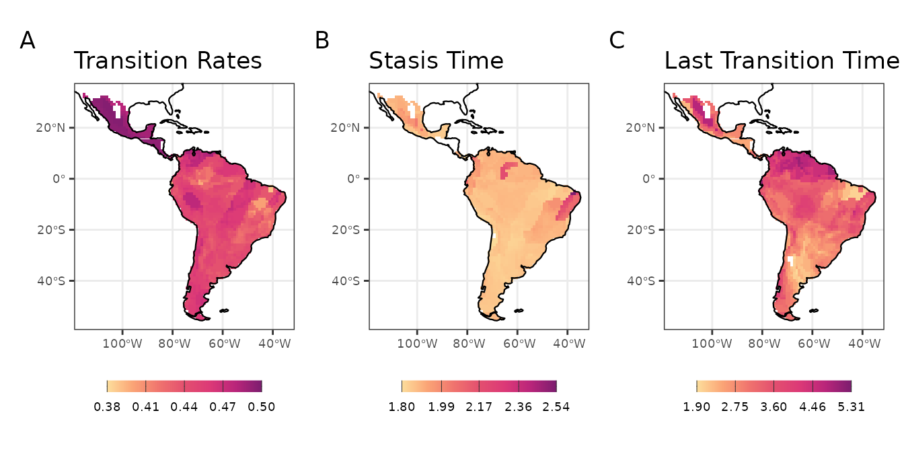

Tip based metrics of trait evolution
tip_based_trait_evolution.RmdTip-based metrics of trait evolution
Here we will show how to implement three tip-based metrics proposed
by Luza
et al. (2021). Note that these tip-based metrics were estimated
using the stochastic mapping of discrete/categorical traits (diet in the
original publication), but can be extended to other traits as we will
show here. The three tip-based metrics are Transition rates,
Stasis time, and Last transition time, and are
implemented in the function calc_tip_based_trait_evo.
Transition rates indicate how many times the ancestral
character has changed over time. Stasis time indicates the
maximum branch length (time interval) which the current tip-character
was maintained across the whole phylogeny. Finally, last transition
time is the sum of branch lengths from the tip to the
prior/previous node with a reconstructed character equal to current
tip-character. As in the original
publication, we will use the stochastic character mapping on
discrete trait data. This time, however, we will reconstruct the species
foraging strata (Elton Traits’ database, Wilman et al. 2014). We will
reconstruct the foraging strata for 214 sigmodontine rodent species with
trait and phylogenetic data (consensus phylogeny of Upham
et al. 2019).
First we will load trait and phylogenetic data we need to run the
function calc_tip_based_trait_evo.
# load packages
library(Herodotools)
library(dplyr)##
## Attaching package: 'dplyr'## The following objects are masked from 'package:stats':
##
## filter, lag## The following objects are masked from 'package:base':
##
## intersect, setdiff, setequal, unionNow calculate the metrics.
match_data <- picante::match.phylo.data(rodent_phylo, trait)
# run `calc_tip_based_trait_evo` function
trans_rates <- Herodotools::calc_tip_based_trait_evo(tree = match_data$phy,
trait = trait , # need to be named to work
nsim = 50,
method = c("transition_rates",
"last_transition_time",
"stasis_time")
)Since this analysis can take several minutes we can read the result obtained using the same code above
load(system.file("extdata", "transition_rate_res.RData", package = "Herodotools"))Now we have the estimates of the three tip-based metrics for 214 rodent species. We can summarize the tip-based metrics at the assemblage scale. First we will load assemblage and geographic data comprising 1770 grid cells located at the Neotropics.
# load community data
comm_data <- read.table(
system.file("extdata", "PresAbs_228sp_Neotropical_MainDataBase_Ordenado.txt",
package = "Herodotools"),
header = T, sep = "\t"
)
# load latlong of these communities
geo_data <- read.table(
system.file("extdata", "Lon-lat-Disparity.txt", package = "Herodotools"),
header = T, sep = "\t"
)Now we calculate the values of tip-based metrics for all species for each assemblage.
# transition rates for each community
averaged_rates <- purrr::map_dfr(1:nrow(comm_data), function (i){
# across assemblages
purrr::map_dfr(trans_rates, function (sims) { # across simulations
# species in the assemblages
gather_names <- names(comm_data[i,][which(comm_data[i,]>0)]) # get the names
# subset of rates
rates <- sims[which(rownames (sims) %in% gather_names),
c("prop.transitions",
"stasis.time",
"last.transition.time")]
mean_rates <- apply(rates, 2, mean) # and calculate the average
mean_rates
}) %>%
purrr::map(mean)
})Since the last step take some minutes to complete you can opt to read directly from the package the table with mean values for all metrics
We will represent in space the variation in the tip-based metrics for rodent assemblages. It seems that, in general, assemblages of the southern, western and northeastern Neotropics have species with higher Transition Rates in foraging strata than communities from elsewhere (i.e., they have many species that often changed their foraging strata over time). Assemblage-level Stasis Time was high for two groups of assemblages: one from northeastern Neotropics, and another in central Amazonia. The first group in particular also showed high Transition Rates. Taken together, these results indicate that, despite the frequent changes in foraging strata, the species of northeastern assemblages retained their phenotipic state during more time than the species found elsewhere. Finally, the Last Transition Time metric shows that the transitions leading to the present species foraging strata were older in the i) north of the Amazonia and ii) central Mexico. These results are potentially reflecting i) the location of arrival of ancestral sigmodontine rodents in south America, and ii) the occurrence of several species closely related to basal lineages.
data("averaged_rates", package = "Herodotools")
# prepare data to map
data_to_map_wide <- data.frame(geo_data[,c("LONG", "LAT")], averaged_rates)
data_to_map_long <-
data_to_map_wide %>%
tidyr::pivot_longer(
cols = 3:5,
names_to = "variables",
values_to = "values"
)
coastline <- rnaturalearth::ne_coastline(returnclass = "sf")
# create a list with the maps
list_map_transitions <- lapply(unique(data_to_map_long$variables), function(metric){
plot.title <- switch(
metric,
"prop.transitions" = "Transition Rates",
"stasis.time" = "Stasis Time",
"last.transition.time" = "Last Transition Time"
)
sel_data <-
data_to_map_long %>%
dplyr::filter(variables == metric)
var_range <- range(sel_data$values) %>% round(2)
var_breaks <- seq(var_range[1], var_range[2], diff(var_range/4)) %>% round(2)
sig_map_limits <- list(
x = range(sel_data$LONG),
y = range(sel_data$LAT)
)
ggplot() +
ggplot2::geom_tile(data = sel_data,
ggplot2::aes(x = LONG, y = LAT, fill = values)) +
rcartocolor::scale_fill_carto_c(
name = NULL,
type = "quantitative",
palette = "SunsetDark",
na.value = "white",
limits = var_range,
breaks = var_breaks
)+
ggplot2::geom_sf(data = coastline, size = 0.4) +
ggplot2::coord_sf(xlim = sig_map_limits$x, ylim = sig_map_limits$y) +
ggplot2::theme_bw() +
ggplot2::guides(fill = guide_colorbar(barheight = unit(2.3, units = "mm"),
direction = "horizontal",
ticks.colour = "grey20",
title.position = "top",
label.position = "bottom",
title.hjust = 0.5)) +
ggplot2::labs(title = plot.title) +
ggplot2::theme(
legend.position = "bottom",
axis.title = element_blank(),
legend.title = element_blank(),
legend.text = element_text(size = 7),
axis.text = element_text(size = 7),
plot.subtitle = element_text(hjust = 0.5)
)
})
# Create map
mapTransition_rate <- patchwork::wrap_plots(list_map_transitions) +
patchwork::plot_annotation(tag_levels = "A")
Maps with tip metrics of evolution dynamics of life mode for Sigmodontine species